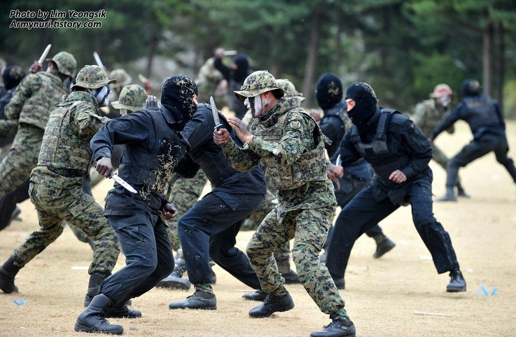

특공무술(特攻武術)은 대한민국 국군에서 특공 능력, 특전사 수행 능력, 신체 단련 등을
목적으로 개발한 창시무예이다. 대한민국 특공대, 특전사, 대통령 경호요원 등이 수련한다.
일반적인 시각에서 특공무술은 '합기도의 한 분파' + '국선도 호흡법' = '장수옥 총재의 특공무술'이다. 국선도는 무술이라기보다는 수행법이므로 실제로는 합기도의 영향을 크게 받았다고 볼 수 있지만, 애초에 한국 합기도 자체도 여러 무술에 영향을 받았다. 따라서 특공무술은 중국무술, 태권도 등을 포함하여 종합적으로 만들어낸 군용무술이라고 볼 수 있다.
